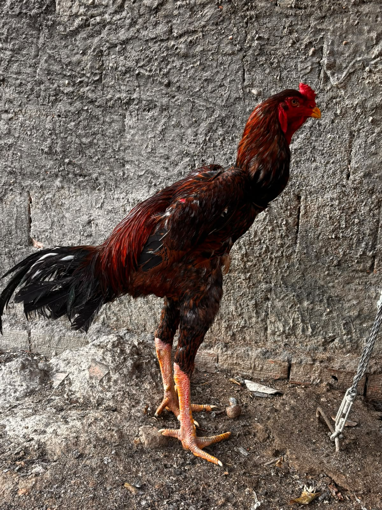

Nosso Portfólio
Conheça alguns exemplares do nosso plantel de Índio Gigante.

Titã - Índio Gigante
Altura: 1,04 m | Peso: 4,830 kg | Idade: 6 meses
Titã é um jovem Índio Gigante de crista ervilha, com plumagem predominantemente preta, com tons vermelhos e castanho-avermelhados. Procedente do Criatório Kid, de Várzea Grande-MT, possui origem genética do Criatório Xavier, de Goiás. Atualmente pertence ao Criatório Zói de Gato, de propriedade de Flávio Rayaan, em Nova Brasilândia-MT, com chegada prevista para 25 de dezembro de 2026.
Ficha Técnica do Titã
| Característica | Informação |
|---|---|
| Nome | Titã |
| Raça | Índio Gigante |
| Sexo | Macho |
| Altura | 1,04 m |
| Peso | 4,830 kg |
| Idade | 6 meses |
| Crista | Ervilha |
| Plumagem | Preta com tons vermelhos e castanho-avermelhados |
| Procedência | Criatório Kid - Várzea Grande/MT |
| Origem genética | Criatório Xavier - Goiás |
| Criatório atual | Criatório Zói de Gato |
| Proprietário | Flávio Rayaan |
| Chegada ao criatório | 25 de dezembro de 2026 - Nova Brasilândia/MT |